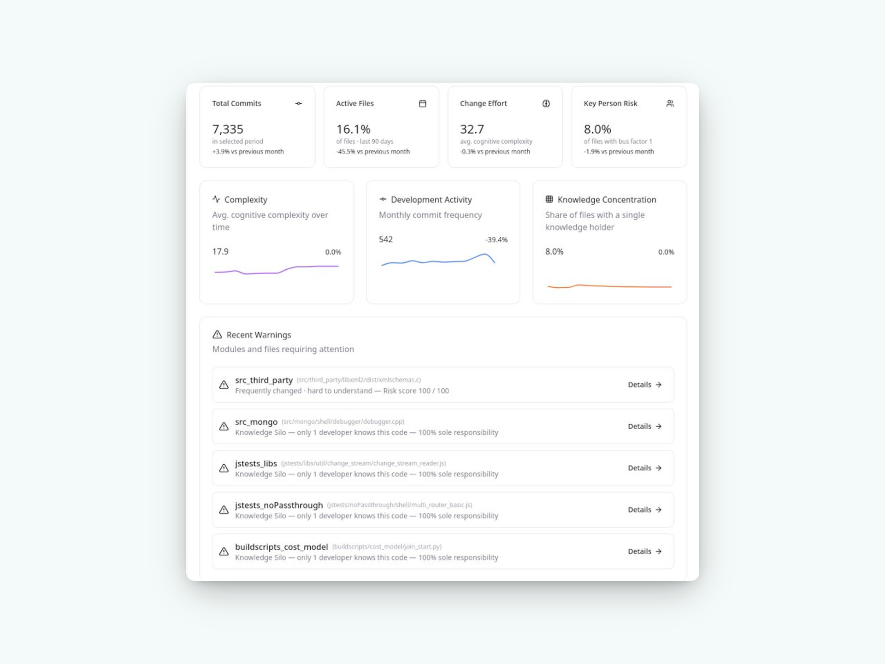
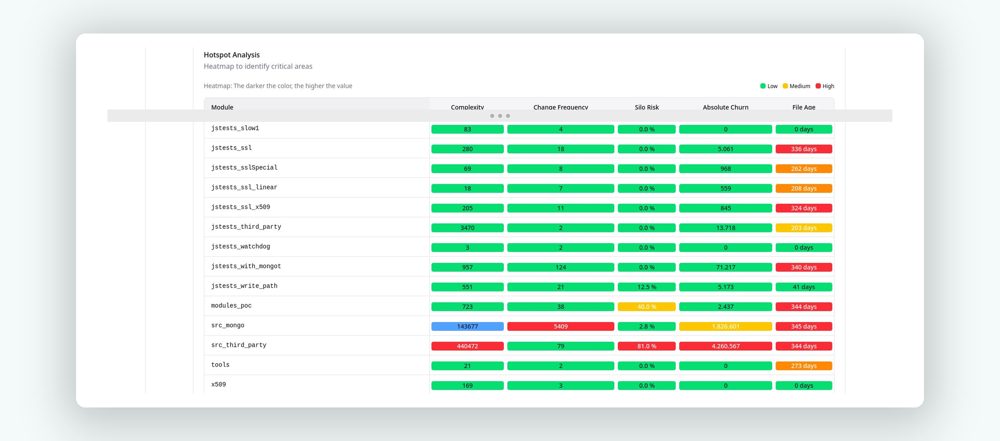
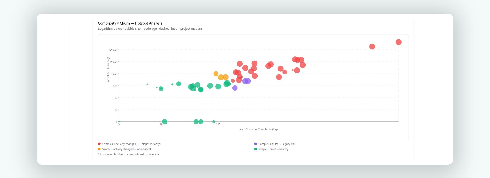
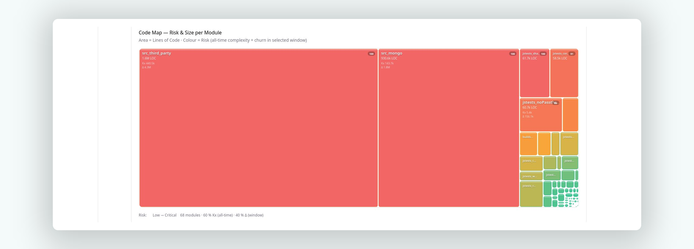
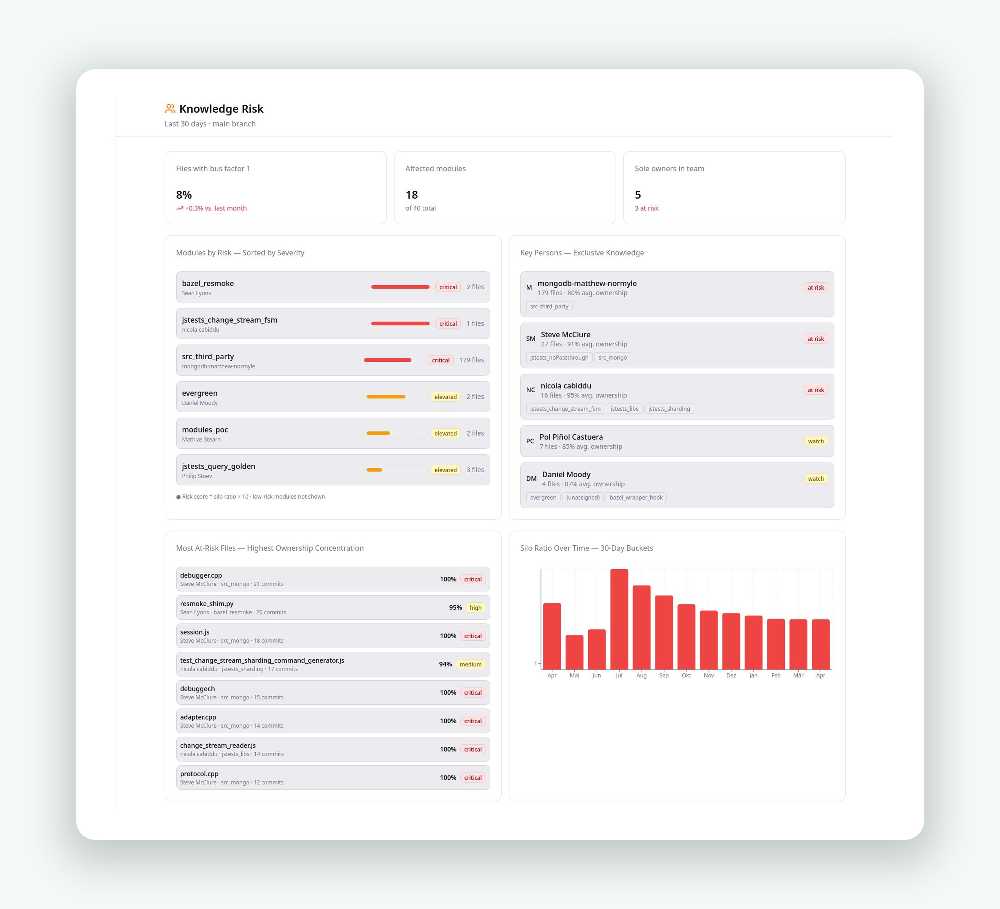

Calyntro analyses Git history, complexity metrics, and team ownership to give CTOs and Engineering Managers a clear view of Knowledge Silos, Absolute Churn, and architectural drift — at File, Module, and Team level.

The Hotspot Heatmap combines five dimensions simultaneously — complexity, change frequency, silo risk, absolute churn, and file age — colour-coded across all modules. Critical areas are impossible to miss.

The Scatter Analysis maps every module by complexity vs. churn — instantly revealing which components are priority hotspots, legacy risks, or healthy and stable. The evidence base your roadmap conversations have been missing. The Code Map adds a spatial dimension: area = Lines of Code, colour = risk score.


Calyntro's Knowledge Risk dashboard turns your Git history into a complete ownership map: KPI cards, module risk scores, a developer breakdown with module ownership tags, top-risk files ranked by activity × concentration, and a month-by-month silo trend. Not based on org charts — based on who actually wrote the code.

Calyntro surfaces them. Deploy in an afternoon, run your first hotspot analysis the same day.
Whether you're evaluating Calyntro for your team, have a technical question, or want to share feedback — we read every message.